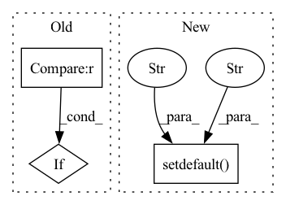

Pattern ID :40046
Before Change
defaults.update(kwargs)
kwargs = defaults
normalizer = EncoderNormalizer(**kwargs)
if kwargs.get("transformation") in ["relu", "softplus"] :
data = data - 0.5
if kwargs.get("transformation") in ["relu", "softplus", "log1p"]:After Change
],
)
def test_EncoderNormalizer(kwargs):
kwargs.setdefault("method" , "standard" )
kwargs.setdefault("center", True)
kwargs.setdefault("data", torch.rand(100))
data = kwargs.pop("data")
In pattern: SUPERPATTERN
Frequency: 3
Non-data size: 3
Instances Fragment ID: 113885035
Project Name: jdb78/pytorch-forecasting
Commit Name: 09eb7856fd61cd62c765376a0b1b2400fecb4243
Time: 2022-05-14
Author: beitner.jan@bcg.com
File Name: tests/test_data/test_encoders.py
M Class Name: AnonimousClass
N Class Name: AnonimousClass
M Method Name: test_EncoderNormalizer(1)
N Method Name: test_EncoderNormalizer(1)
M Parent Class:
N Parent Class:
M File Name: tests/test_data/test_encoders.py
N File Name: tests/test_data/test_encoders.py
M Start Line: 59
M End Line: 67
N Start Line: 73
N End Line: 76
Before Change
self.spikes_layer_type = spikes_layer_type
self.dt = dt
self.learning_type = learning_type
if spikes_layer_kwargs is None :
spikes_layer_kwargs = dict(
forward_weights=torch.eye(n_units),
use_recurrent_connection=False,After Change
self.learning_type = learning_type
kwargs.setdefault("forward_weights", torch.eye(n_units))
kwargs.setdefault("use_recurrent_connection", False)
kwargs.setdefault("name" , "encoder" )
assert "learning_type" not in kwargs, \
"learning_type cannot be specified since it must be the given value"
assert "dt" not in kwargs, \ Fragment ID: 113885037
Project Name: neurotorch/neurotorch
Commit Name: ff70b0b73f8f3fdd2b80e4da858482eec143c8aa
Time: 2022-08-23
Author: 50332514+JeremieGince@users.noreply.github.com
File Name: src/neurotorch/transforms/spikes_encoders.py
M Class Name: SpikesEncoder
N Class Name: SpikesEncoder
M Method Name: __init__(7)
N Method Name: __init__(8)
M Parent Class: torch.nn.Module
N Parent Class: torch.nn.Module
M File Name: src/neurotorch/transforms/spikes_encoders.py
N File Name: src/neurotorch/transforms/spikes_encoders.py
M Start Line: 19
M End Line: 54
N Start Line: 44
N End Line: 53
Before Change
if mp.get_start_method(allow_none=True) is None:
mp.set_start_method("spawn")
if launcher == "pytorch" :
_init_dist_pytorch(backend, **kwargs)
elif launcher == "slurm":
_init_dist_slurm(backend, **kwargs)After Change
"scontrol show hostname {} | head -n1".format(node_list))
os.environ.setdefault("MASTER_ADDR", master_addr)
os.environ.setdefault("MASTER_PORT" , "29500" )
os.environ["WORLD_SIZE"] = os.environ["SLURM_NTASKS"]
os.environ["RANK"] = os.environ["SLURM_PROCID"]
os.environ["LOCAL_RANK"] = os.environ["SLURM_LOCALID"] Fragment ID: 113885039
Project Name: yeliudev/nncore
Commit Name: bd9472949e3bdb0e7a2c42afeb2e031d8f2f577f
Time: 2021-11-23
Author: yeliudev@outlook.com
File Name: nncore/engine/comm.py
M Class Name: AnonimousClass
N Class Name: AnonimousClass
M Method Name: init_dist(2)
N Method Name: init_dist(2)
M Parent Class:
N Parent Class:
M File Name: nncore/engine/comm.py
N File Name: nncore/engine/comm.py
M Start Line: 88
M End Line: 95
N Start Line: 63
N End Line: 82